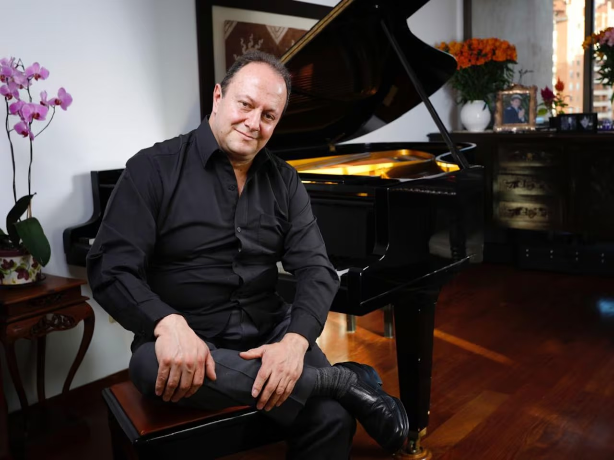

Música, tradición y piano
Germán Darío Pérez
Pianista, compositor y músico colombiano.
Pianos
Pianos disponibles para venta.
🎼 Partituras
Encuentra partituras y obras de Germán Darío Pérez.
💿 Música
Escucha la música de Germán Darío Pérez y del Trío Nueva Colombia.
La historia
Conoce la trayectoria musical de Germán Darío Pérez, sus composiciones, presentaciones y reconocimientos.
Contacto
Para información sobre pianos, partituras y música, puedes contactarnos.
Contactar por WhatsApp